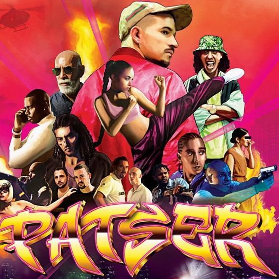
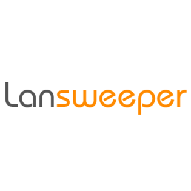

I-talent
Cultuurverschillen
Op maandag 12 maart gaf onze Decaan Jan Schelstraete een lezing over cultuurverschillen.

Anysurfer
Op maandag 19 maart was er een lezing over de toegankelijkheid van websites door anysurfer.

Patser
Op vrijdag 2 maart hebben we, de derde fim van Adil El Arbi & Bilall Fallah, "Patser " bekeken. "
Disc Test
In het begin van het 2e semester maakten we een persoonlijkheids test die je in een bepaalde
categorie plaatst.

MBTI / Enneagram
In de loop van het jaar hebben we verschillende persoonlijkheidstesten gedaan, dit is er één van.
Interview Multiminds
Voor een taak over vooroordelen en cultuurverschillen deden we een interview met een co-founder van multiminds
Meetup Lansweeper
Voor mijn ondernemens punten volgde ik een meetup over javascript bij Lansweeper.
